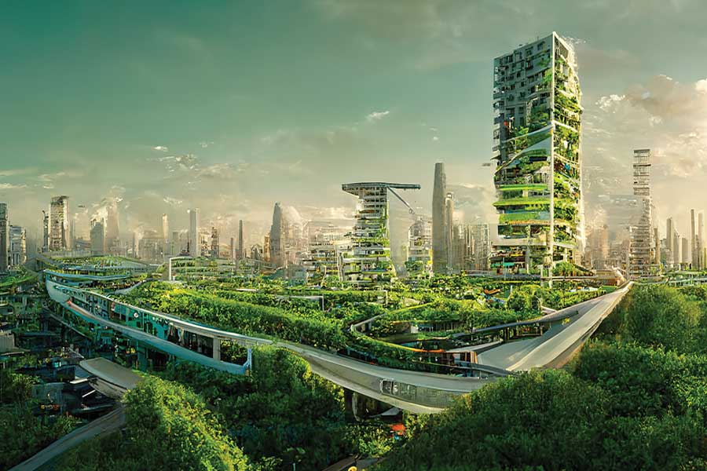

Future Cities Vision
Green Buildings 🌱
Structures that breathe and produce energy through vertical forests.
Smart Transport 🚗⚡
Silent, electric, and autonomous transit networks for the eco-city.

Clean Energy ☀️
Harnessing solar and wind power integrated into building skins.
Eco-friendly Living
Communities built around parks, circular waste, and clean air.
MORE ABOUT FUTURE CITIES
🌆 Introduction to Future Cities
Future cities are designed to create a healthier and more sustainable lifestyle for people. Instead of depending only on concrete and heavy pollution, smart cities combine nature and technology to build cleaner environments. Green buildings, smart transportation systems, renewable energy, and eco-friendly public spaces all work together to improve the quality of life.
🌱 Sustainable Buildings
In the future, buildings will not only provide shelter but also help the environment. Many skyscrapers may include vertical gardens, rooftop farms, and solar panels that generate clean energy. These green structures can reduce heat, improve air quality, and create more comfortable urban spaces for people living in crowded cities.
🚗 Smart Transportation
Transportation will also become more advanced and environmentally friendly. Electric buses, smart trains, and autonomous vehicles can reduce traffic congestion and lower carbon emissions. More walking paths and cycling lanes will encourage healthier lifestyles while making cities quieter and safer for everyone.
⚡ Clean Energy Systems
Future cities will depend more on renewable energy sources such as solar, wind, and hydro power. Smart energy systems can store electricity efficiently and reduce energy waste. Buildings and streets may use solar panels and energy-saving technology to support cleaner and more reliable power systems.
🌍 Smart Environmental Technology
Smart technology will play an important role in managing resources efficiently. Sensors and digital systems can monitor energy use, water supply, waste collection, and even air pollution levels in real time. This allows cities to save resources, reduce waste, and respond quickly to environmental challenges.
🏙️ Healthy Urban Living
Public spaces in future cities will focus more on human wellbeing. Parks, urban forests, and community gardens will provide natural areas where people can relax and connect with nature. These spaces also help reduce urban heat and support biodiversity by creating habitats for birds, insects, and other wildlife.
✨ The Future Vision
The vision of future cities is not only about advanced technology but also about creating balance between humans and the environment. By combining innovation with sustainability, future cities can become cleaner, greener, safer, and more resilient places for future generations.